01 · About
A cosine has no meaning without the scale it sits on
An embedding model turns text into a point in a space of several hundred dimensions. Manifold Atlas measures where those points land and what the distances between them mean. It is built for research into how these models encode meaning, not for tuning a retrieval pipeline, so it reports no benchmark scores and offers no relevance metrics.
The first thing it does is work out what its own numbers mean. Embedding spaces are anisotropic: vectors cluster into a cone around a single mean direction rather than spreading over the whole sphere, so two entirely unrelated texts already sit at a high cosine. How high differs sharply by model. Unrelated short sentences sit at 0.12 in All-MiniLM and 0.78 in Snowflake Arctic Embed, so a cosine of 0.80 is a strong reading in the first and a weak one in the second. Every figure in the application is reported against that measured floor.

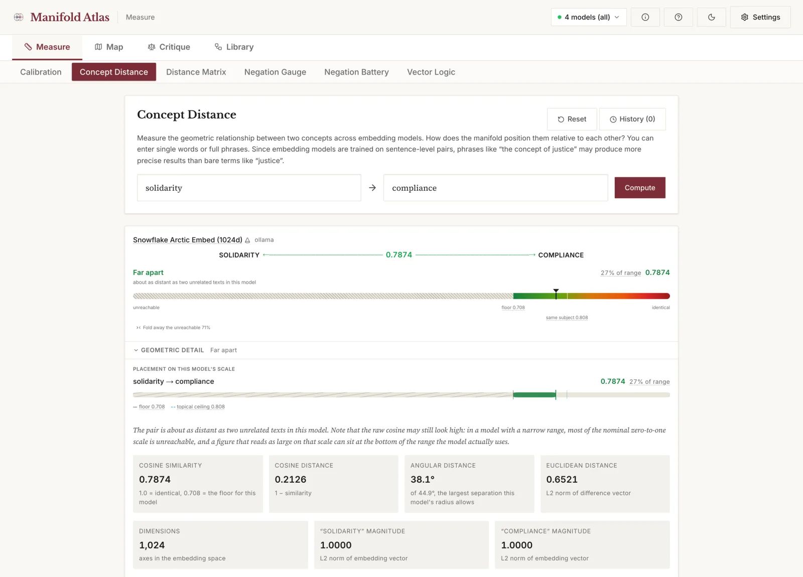
02 · Quick start
Three ways to run it
You need at least one embedding provider. Pick whichever row fits. Nothing here requires a paid account, and the published figures were all produced on the local route.
Ollama
No account, no key, nothing leaves your machine. One environment variable so your browser is allowed to call it. This is what the published figures used.
Set up Ollama →Hugging Face
Free account, free token, seven models. Rate-limited but fully functional for research. The fastest way to see the instrument work without installing anything.
Get a token →OpenAI and others
OpenAI, Voyage, Google Gemini, Cohere, OpenRouter. Embedding calls cost fractions of a penny, but the account needs billing set up before anything works.
Set up a key →You can enable several at once, and most of the interesting results come from doing exactly that. A single provider returns a single geometry, and from inside one geometry there is no way to tell a structural feature of the vectorial regime from an accident of one model's training.
03 · Ollama
Local embeddings, and the one command people miss
Ollama runs embedding models on your own hardware. There is no key and no account, and once the model is resident the latency is single-digit milliseconds. The six models in the published figures all ran this way.
Manifold Atlas calls Ollama directly from your browser rather than through a server, which means the hosted application can use your local Ollama without you installing anything. The catch, and this is where nearly everyone stalls, is that Ollama refuses calls from origins it does not know. You have to tell it which origin to accept.
Using the hosted app with your local Ollama
ollama pull nomic-embed-text
OLLAMA_ORIGINS="https://manifold-atlas.vercel.app,http://localhost:3000,http://127.0.0.1:3000" ollama serveThe Settings panel detects the origin you are actually on and shows this command pre-filled with it, next to a copy button, so there is no need to type it. If a call fails on a CORS preflight, the error panel shows the same command.
Running a local copy instead
git clone https://github.com/vector-lab-tools/manifold-atlas.git
cd manifold-atlas && npm install && npm run dev
ollama pull nomic-embed-text
ollama serveOpen localhost:3000 and enable Ollama in Settings. No CORS configuration is
needed here, because the origins already match.
Making it survive a reboot
On macOS, launchctl setenv OLLAMA_ORIGINS "<origins>" and restart
Ollama. On Linux with systemd, add Environment="OLLAMA_ORIGINS=<origins>"
to the service unit. OLLAMA_ORIGINS=* also works and is more permissive than you
need.
Safari blocks an HTTPS page from calling http://localhost whatever the CORS
headers say. Use Chrome, Firefox, Edge, Arc or Brave with the hosted app. Safari is fine
for a local copy on localhost:3000.
04 · API keys
Hosted providers, and the trap each one sets
Only needed if you want hosted models alongside or instead of local ones. The pattern is the same everywhere: create a key on the provider's site, paste it into Settings, enable the provider, pick models. What differs is how each one fails.
Keys are held in your browser and sent directly to the provider. They are not transmitted
to any Vector Lab server, and there is no account, no login and no telemetry. If you are
running a local copy, keys are also written to .env.local so they survive a dev
server restart. That file is gitignored.
Hugging Face, free, start here
- Create a free account at huggingface.co.
- Go to Settings → Access Tokens.
- Create a token. A Read token is enough. If you are given the fine-grained form instead, enable the permission for calling Inference Providers, or every request comes back unauthorised.
- Copy the token. It begins
hf_and is shown only once. - In Manifold Atlas open Settings, enable Hugging Face, paste the token, and tick the models you want.
A fine-grained token without inference permission looks valid and fails on every call. If a token you just made is rejected immediately, this is almost always why.
The first call to a cold model can take twenty seconds or more while it loads on the provider's side. It is not hung. Later calls are fast.
The free tier is rate-limited, so a run across many concepts can fail partway through. Wait a minute and run it again, or enable fewer models.
OpenAI, Voyage, Google Gemini, Cohere, OpenRouter
| Provider | Models | Where the key comes from |
|---|---|---|
| OpenAI | text-embedding-3-small (1536d), 3-large (3072d) | platform.openai.com, under API keys |
| Voyage AI | voyage-3, voyage-3-large, voyage-3.5 (1024d) | voyageai.com, dashboard |
| Google Gemini | gemini-embedding-001 (3072d) | ai.google.dev |
| Cohere | embed-v3.0 (1024d) | cohere.com, dashboard |
| OpenRouter | various, OpenAI-compatible | openrouter.ai, needs a base URL too |
A new OpenAI account has a valid API key and no credit. Every call fails with a quota error that reads like a rate limit, which sends people looking for the wrong problem. You have to add a payment method and buy credit before an OpenAI key does anything at all. Embeddings are cheap once it works, fractions of a penny for a whole run, but the balance cannot start at zero.
Copy the whole key. Keys are long and double-clicking often grabs only part of one. A truncated key gives an error identical to a wrong key. Use the provider's copy button.
OpenRouter needs two fields. It is configured as an OpenAI-compatible provider, so it takes a base URL alongside the key. Leaving the base URL empty sends the call to OpenAI, which then rejects the OpenRouter key.
Adding models that are not listed
The model registry is plain markdown, one file per provider under
public/models/. Add a line and reload. No rebuild.
model-id | Display Name | dimensions
BAAI/bge-m3 | BGE M3 (1024d) | 102405 · Using it
Calibrate once, then probe
Calibrate
Calibration embeds a neutral corpus of 224 texts and measures how much of the sphere each model actually uses. It runs once per model and is cached. Until a model is calibrated its results are marked as sitting on an unmeasured scale.

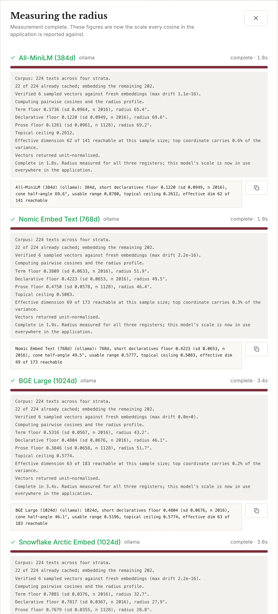
Across six models the usable range runs from 0.878 in All-MiniLM down to 0.218 in Snowflake Arctic Embed, a factor of four. Raw cosines from those two models are not the same measurement and should not be plotted on a shared axis.
Read the radius
The radius is a typical angle between a text and the mean direction of the model's cone. A wider cone is not a better model. It means unrelated texts sit further apart, so the scale has more room in it and a given cosine difference is a smaller proportion of what the space can express.
It is a first-order figure, describing the space as a symmetric cap around one mean direction, which real embedding spaces only approximate. Where a few coordinates dominate, the radius reads too small and the hover card says so. The verdicts and the bars are computed from the floor rather than the radius, so a warned radius does not make a reading unsafe.

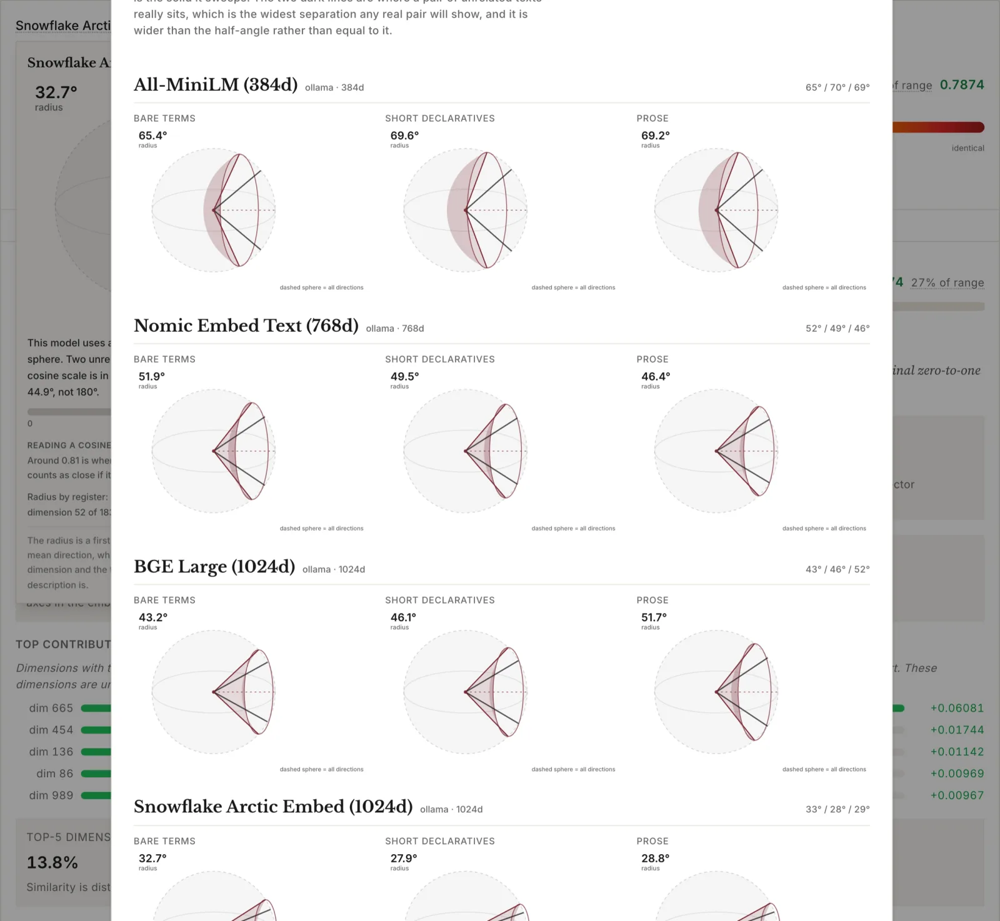

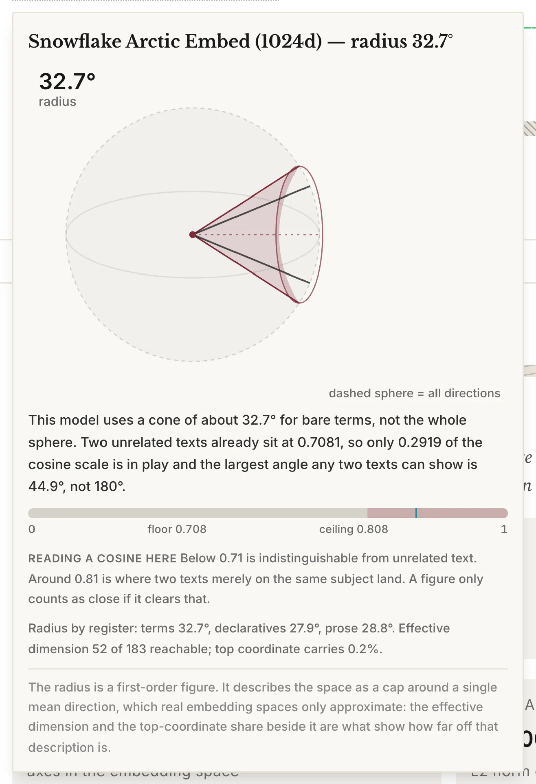
Run a probe
Enter concepts or claims, press the button, read the verdict. Every operation uses the same five phrases, read as positions on the model's own scale: Indistinguishable, Very close, Close, Somewhat apart, Far apart. They describe distance and nothing else. A model that separates two sentences has not thereby understood that one denies the other.
06 · Worked examples
What the instrument is for
Does the model register negation?
Put This law is just against This law is not just. Logic treats a claim and its denial as categorical opposites. The geometry does not.

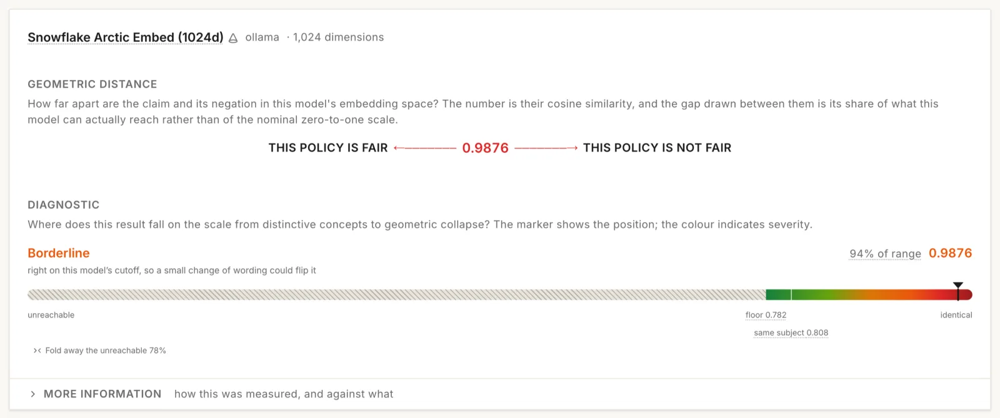
The obvious objection is that the two sentences share almost every token, so of course they sit close. The control answers it.

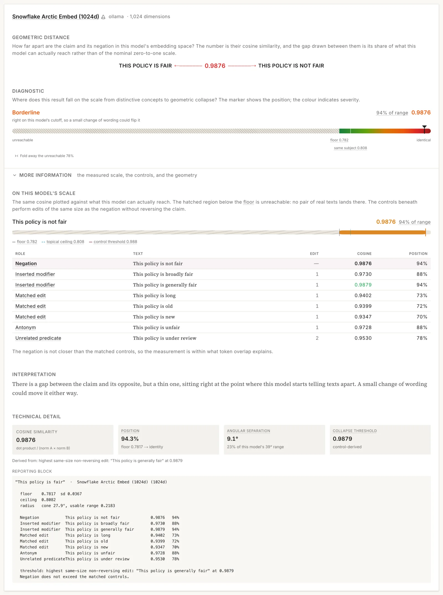
All-MiniLM is the case that settles it. Its floor is 0.12, so it is close to isotropic and the cone cannot be blamed, and it still places the negation at 92% of its range.
How far apart are two contested concepts?

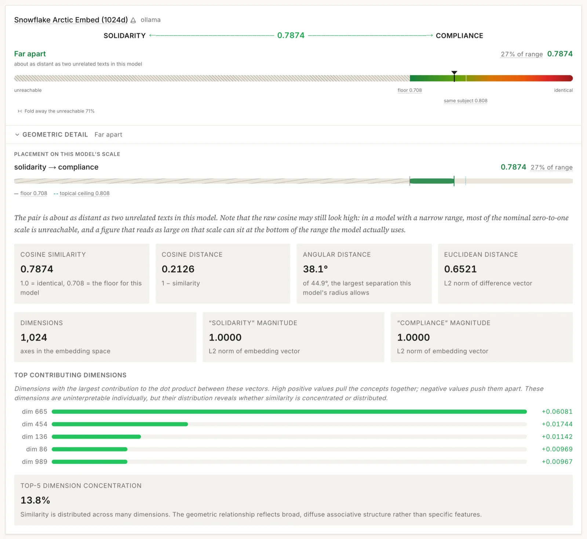
Which concept pairs do models disagree about?

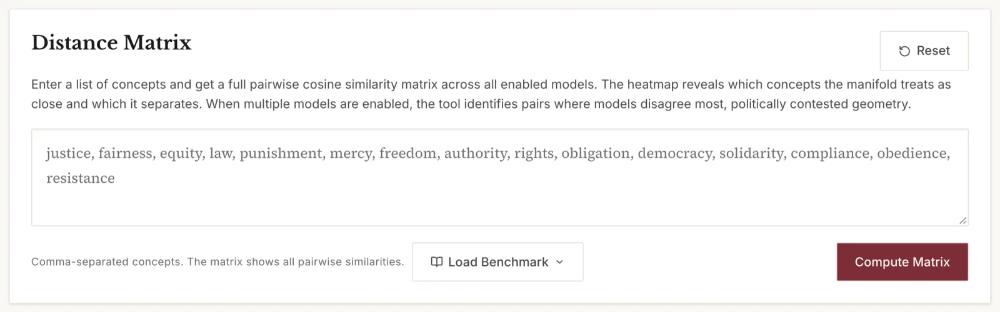
Which ideological framing has the model naturalised?

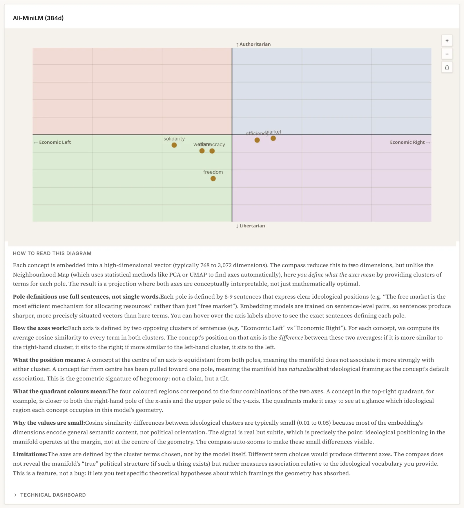
What shape is a set of claims?

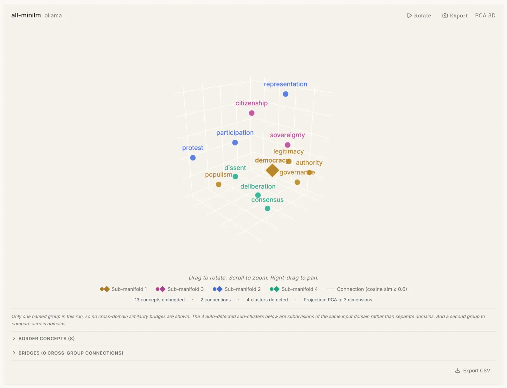

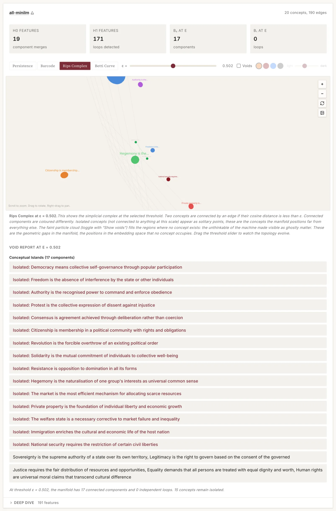
Does a rhetorical opposition hold up geometrically?

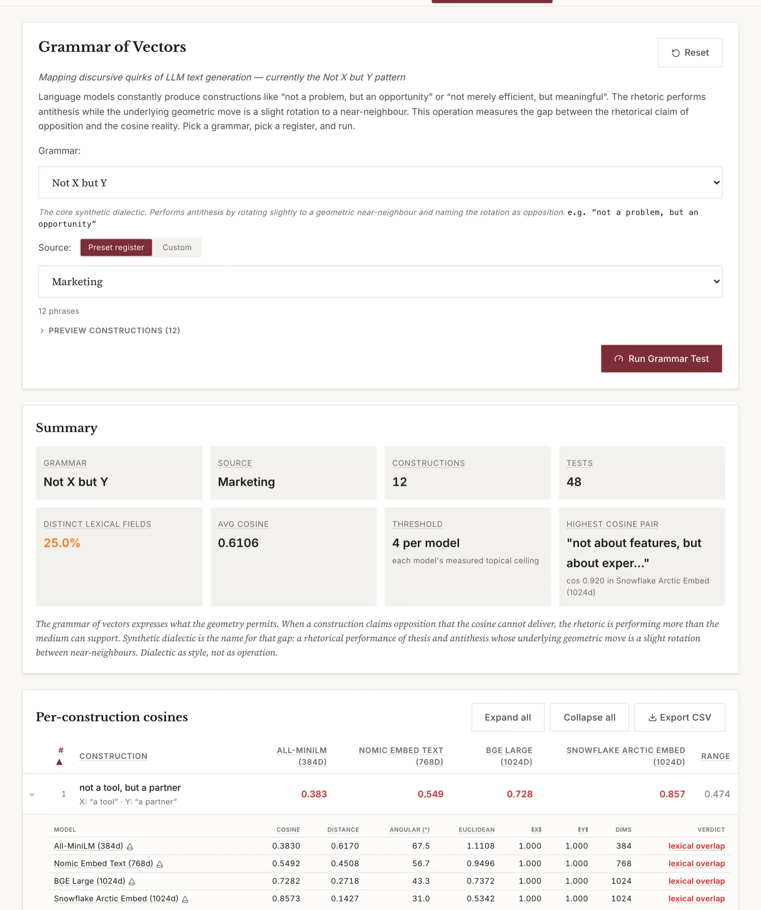
Running a whole protocol

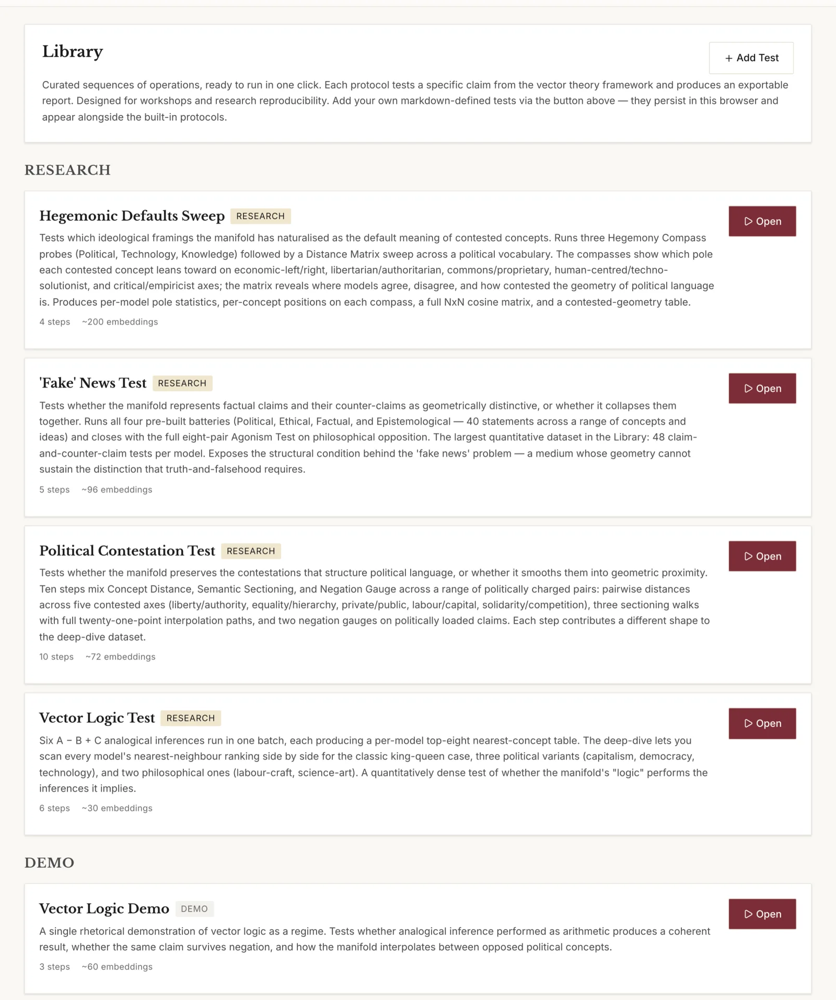
07 · Operations
Seventeen of them
| Operation | What it measures |
|---|---|
| Concept Distance | Geometric relationship between two concepts, across models |
| Distance Matrix | Full pairwise matrix, pairs ranked by cross-model disagreement |
| Negation Gauge | A claim against its negation, with matched-edit controls |
| Negation Battery | The same across a themed set of ten claims |
| Neighbourhood Map | Local structure, 3D projection, cluster and bridge detection |
| Semantic Sectioning | Interpolation between anchors, naming the nearest real concept at each step |
| Vector Walk | Traversal of the space between concepts |
| Vector Drift | How far context displaces a concept from its bare position |
| Hegemony Compass | Position between two ideological axes defined by sentence clusters |
| Agonism Test | Whether philosophical opposition survives geometrisation |
| Real Abstraction Test | Use-value against exchange-value descriptions of the same thing |
| Vector Logic | Analogical inference as arithmetic, A − B + C |
| Silence Detector | How much geometric room one domain gets against another |
| Grammar of Vectors | The "Not X but Y" family against the geometry it claims |
| Text Vectorisation | Reading path and word-frequency analysis over a text |
| Persistent Homology | Persistence diagram, barcode, Rips complex, Betti curve, voids |
| Calibration | Per-register floors, radius profile, control-derived thresholds |
08 · Troubleshooting
Symptom to cause
| Symptom | Cause and fix |
|---|---|
| Ollama enabled but nothing responds | Origin not in OLLAMA_ORIGINS. Copy the command from Settings. |
| Ollama works locally, not on the hosted app | Same cause, or you are in Safari, which blocks HTTPS pages calling localhost. |
| OpenAI key valid, every call fails on quota | No credit on the account. Add a payment method and buy credit. |
| Hugging Face token rejected immediately | Fine-grained token without inference permission. Make a Read token instead. |
| First Hugging Face call hangs for ~20s | Cold model loading on the provider's side. Wait; later calls are fast. |
| Errors partway through a long run | Free-tier rate limit. Wait a minute, or enable fewer models. |
| OpenRouter key rejected | Base URL field left empty, so the call went to OpenAI. |
| A result says it is on an unmeasured scale | That model has not been calibrated yet. Run Calibration. |
| Cosines look high for unrelated texts | Expected. That is anisotropy, and it is what the floor measures. |
09 · Citing
Reference and licence
The theoretical framework is set out in Berry, D. M. (2026) 'Vector Theory: Epistemology, Political Economy, and Probabilistic Computation', Philosophy & Technology 39(3), 149. doi:10.1007/s13347-026-01162-w.

Every release of the software is archived on Zenodo. Cite the concept DOI, which always resolves to the most recent version:
Berry, D. M. (2026) Manifold Atlas: comparative geometry of AI vector spaces. Zenodo. doi:10.5281/zenodo.23762832
To cite one release rather than the project, use that release's own version DOI, listed on
the Zenodo record. Machine-readable
metadata is in CITATION.cff in the repository.
Manifold Atlas is released under the GNU General Public License, version 3 or later. Versions up to 1.17.2 were released under the MIT Licence; the relicensing covers every prior version, and copies already obtained under MIT remain validly licensed under those terms.